레시피 페이지
레시피
레시피 콘텐츠
레시피목록
추천레시피
Best레시피
레시피 검색
- 재료 선택 -
내 냉장고
술안주
손님접대
초스피드
다이어트
간식
영양식
도시락
해장
- 전체 -
일상
술안주
손님접대
초스피드
다이어트
간식
영양식
도시락
해장
레시피
목록
더보기
1
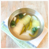
옛 맛 그대로~ 동치미 만들기
2
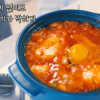
순두부찌개. 바지락, 고기 없이도 기가 막힌 순두부찌개 만드는 법
3
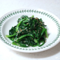
백선생 시금치무침 만드는 법 초간단
4
소고기무국 황금레시피, 재료는 간단 맛은 최고
5
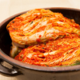
김장김치 양념 비율, 배추 30포기 생새우와 고춧가루 비율
6
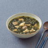
엄마의 레시피, 소고기 미역국 끓이는 법
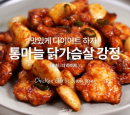
닭가슴살 맛있게 먹기! 통마늘 닭가슴살 강정
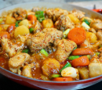
백종원 닭볶음탕 맛있게! 닭볶음탕 만드는법
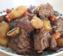
소갈비찜 매니아!! 야들야들 소갈비찜
추천 키워드
#밑반찬
#간단요리
#백종원
#다이어트
#면역력
#저칼로리
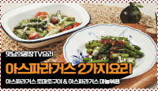
백종원의 아스파라거스토마토구이 & 아스파라거스 마늘볶음
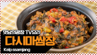
다른 반찬 필요 없음! 맛남의 광장 백종원의 다시마 쌈장
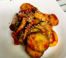
초간단! 오이초무침! 상콤한게 맛있어요
내 몸의 독소제거 해독주스
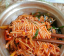
초간단 야식 비빔국수 만들기
가지 스테이크
고영관 님
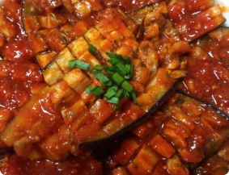
야들야들 소갈비찜
행복요리사 님
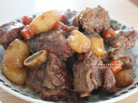
백종원 닭볶음탕
행복요리사 님
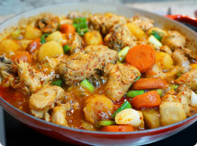
jmkhan99
팔로워100, 팔로잉20
알림(5)
내 쇼핑정보(0)
레시피 노트(2)
스크랩한 레시피(7)
내가 본 레시피(33)
리뷰(후기)한 레시피(3)
문의하기/고객센터
이 어플은
핸드폰
화면 크기 (세로 모드)
에 최적화되었습니다.